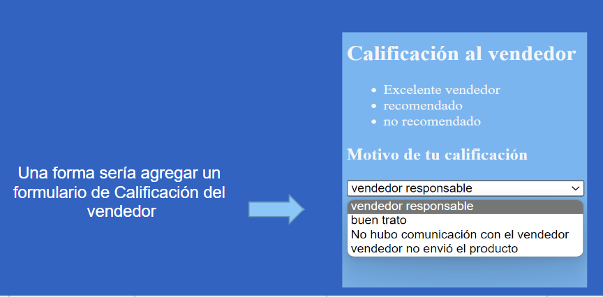
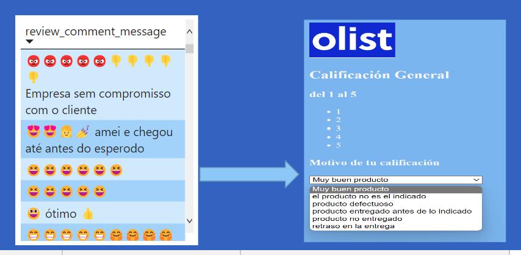

“Análisis data E-commerce Olist-Store”
Objetivo
El objetivo de este análisis es identificar cada cuanto tiempo entra una orden a nuestra plataforma(Tiempo del ciclo de órdenes) y que aspectos tomar en consideración para mejorar ese tiempo.
Herramientas Utilizadas
- BigQuery
- PowerBI
Conclusiones y Recomendaciones
Analizar a los Vendedores
Para identificar cuáles son sus fallas: si es el trato, el producto que ofrece, la empresa de entrega..... y así buscar nuevas estrategias de mejoras.
Aplicar nuevas estrategias para identificar el sentir del usuario
Una forma sería agregar una lista donde éste seleccione el motivo de su calificación y así identificar las fallas que estamos presentando y poder tomar mejor decisiones.
